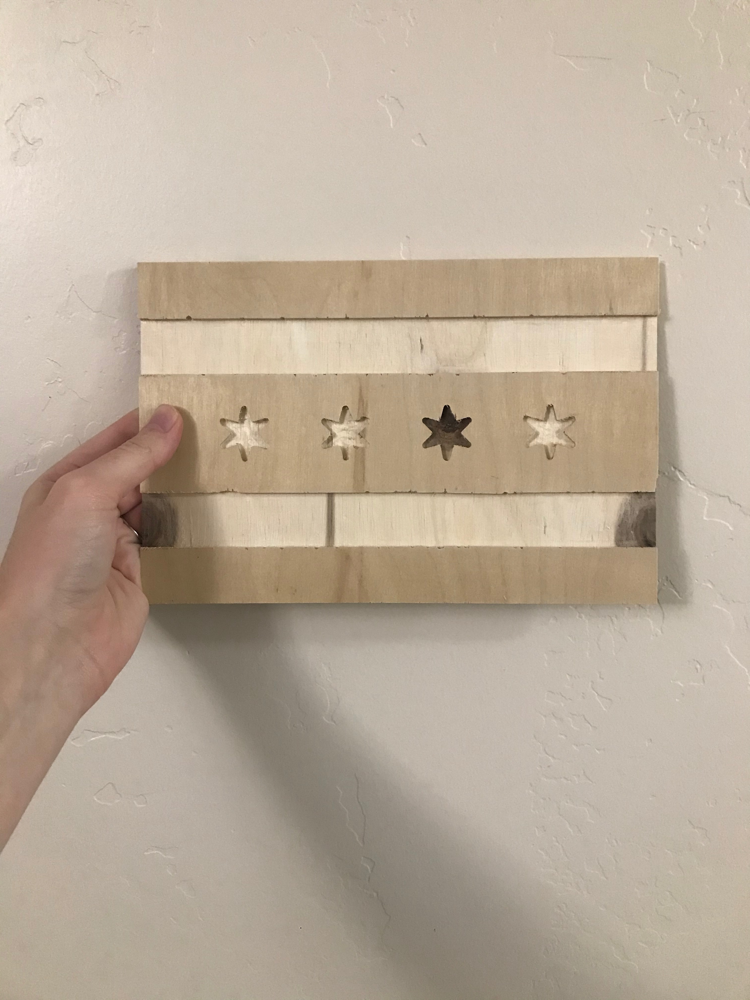

Design
I started with wanting to cut the Chicago skyline, but it's fairly intricate and would take a lot of work and different size bits. Since I wanted to keep the Chicago motif, I landed on the Chicago flag, since it's simple and recognizable. It was fairly easy to find a SVG file of a Chicago flag so I used that and put it into the CNC router via USB.
Cutting
The cutting process was harder and more physical than I anticipated. It took effort to cut and engrave everything, but it came out pretty okay. I think it's cool how a knot in the wood lined up perfectly with one of the stars. I sanded down the whole thing to make it smooth and to buff out any stray pieces of wood and it looked a lot better. Maybe in the future when I have a little bit of time I'll put a stain on the wood.
